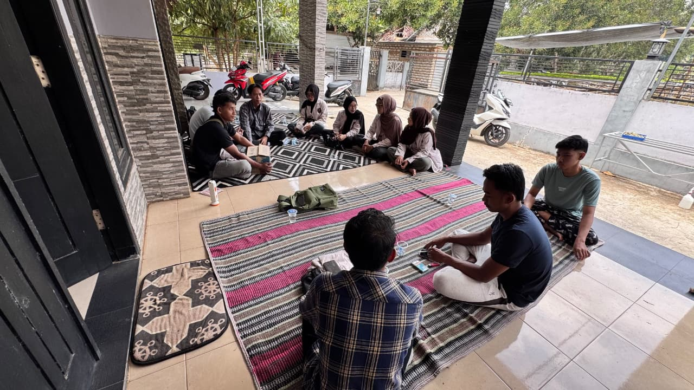
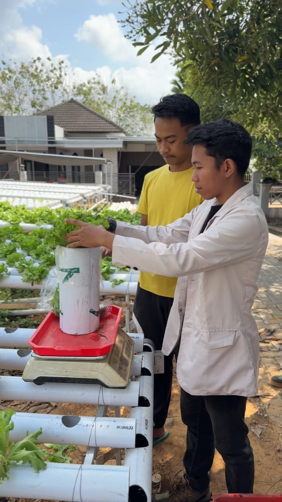
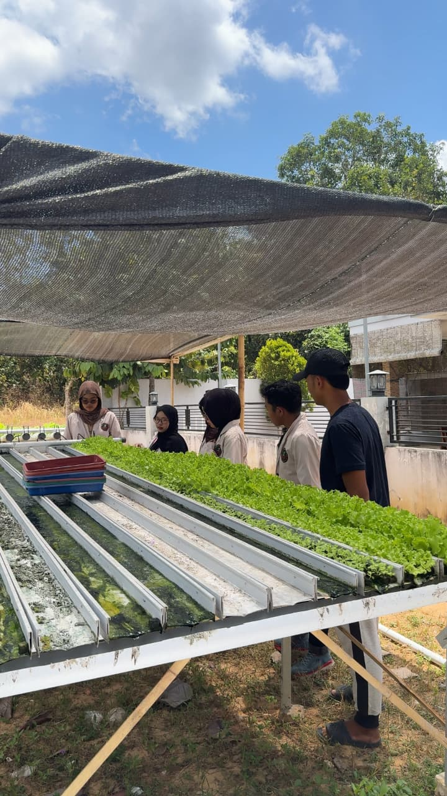
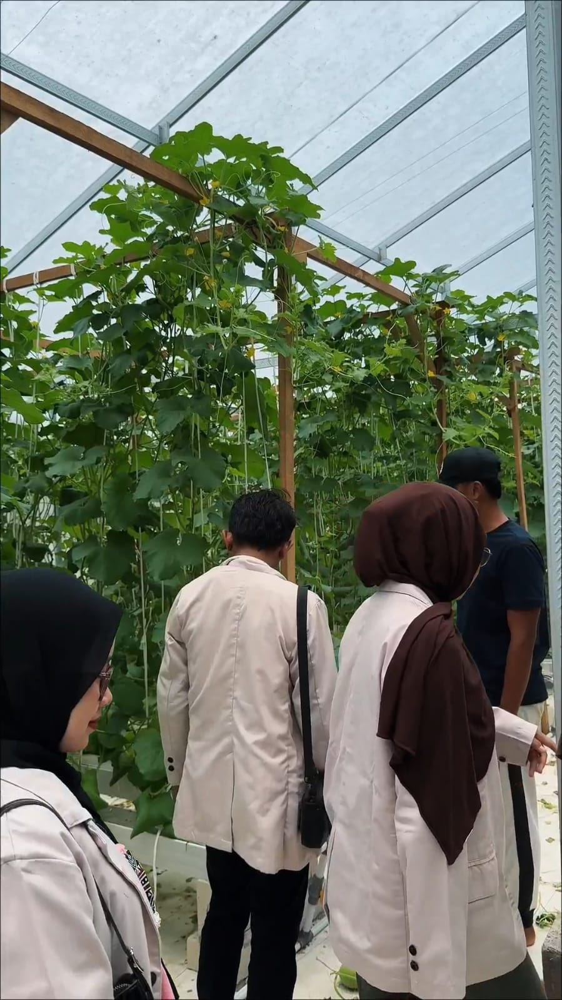
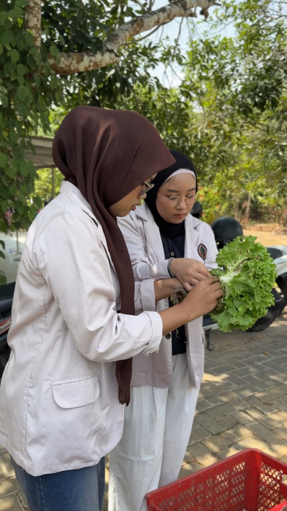
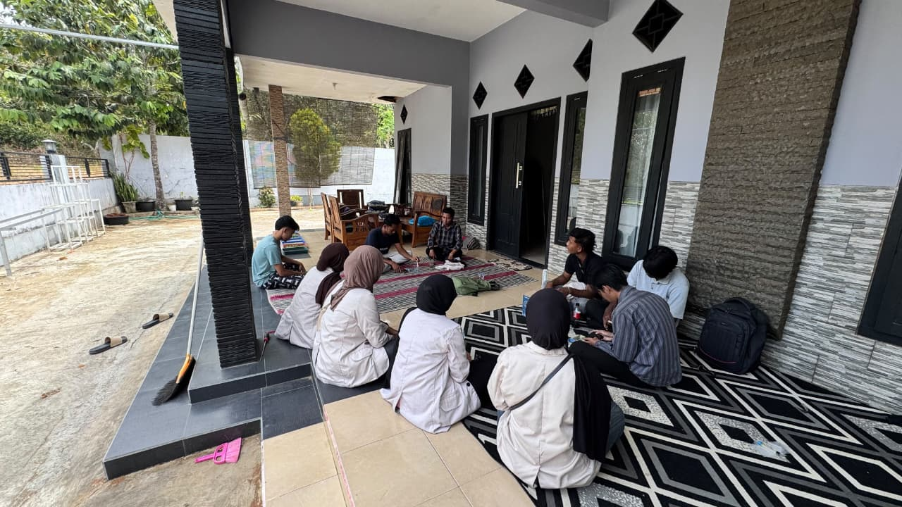
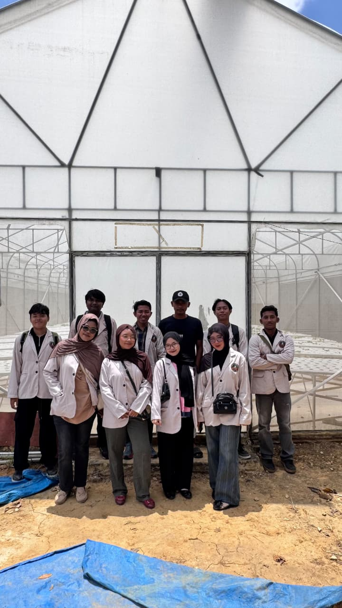
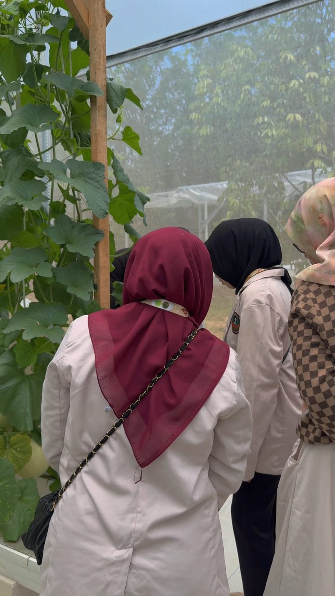
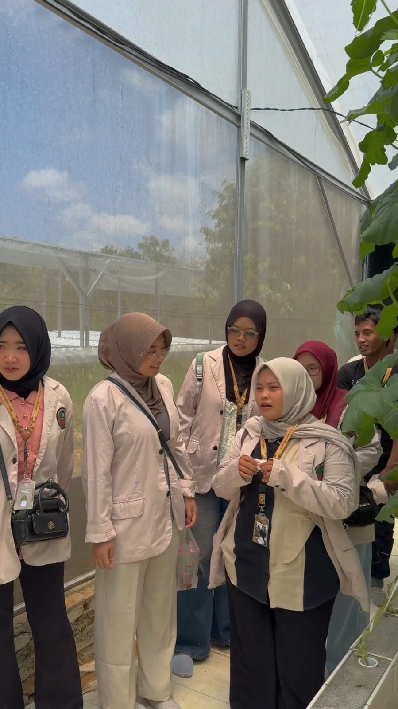

Dokumentasi KKNT
Rekam Jejak Lapangan

Koordinasi
Diskusi Proker Bersama Warga

Panen
Penimbangan Selada

Perawatan
Cek Nutrisi Berkala

Observasi
Pengamatan Rambat Melon

Kualitas
Pengecekan Akar

Tim KKNT
Evaluasi Harian

Tim KKNT 20
Formasi Lengkap Kelompok 20

Edukasi
Pengenalan Hama

Koordinasi